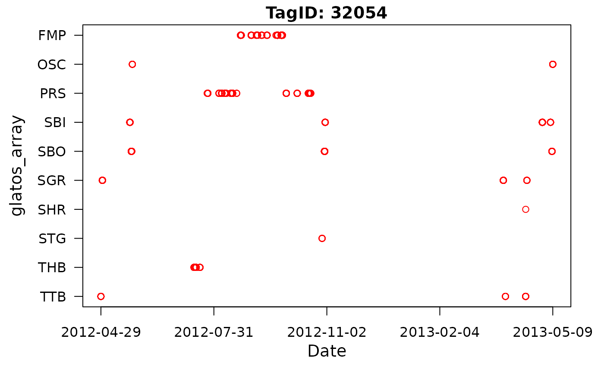
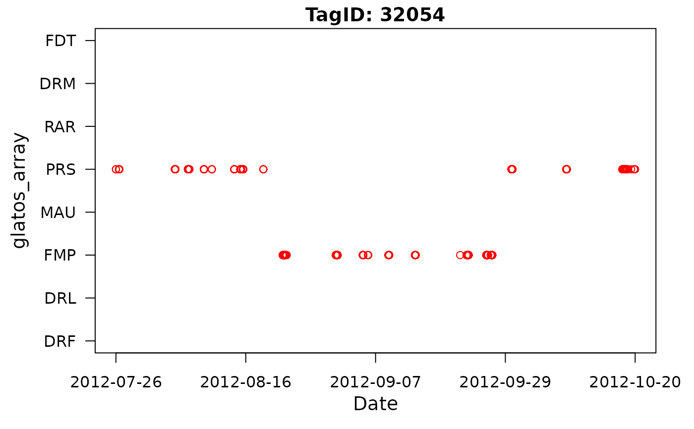
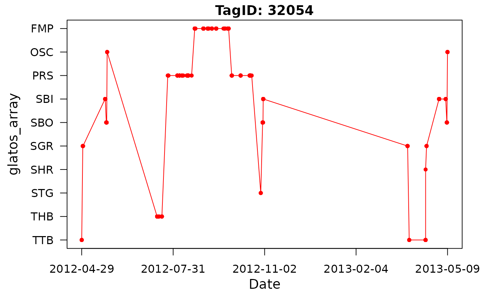
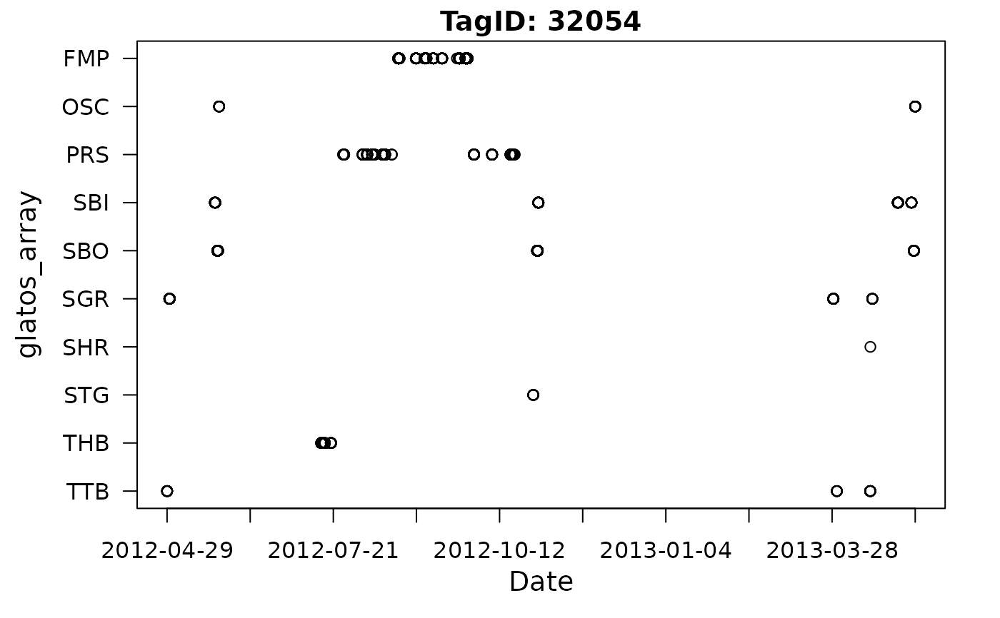
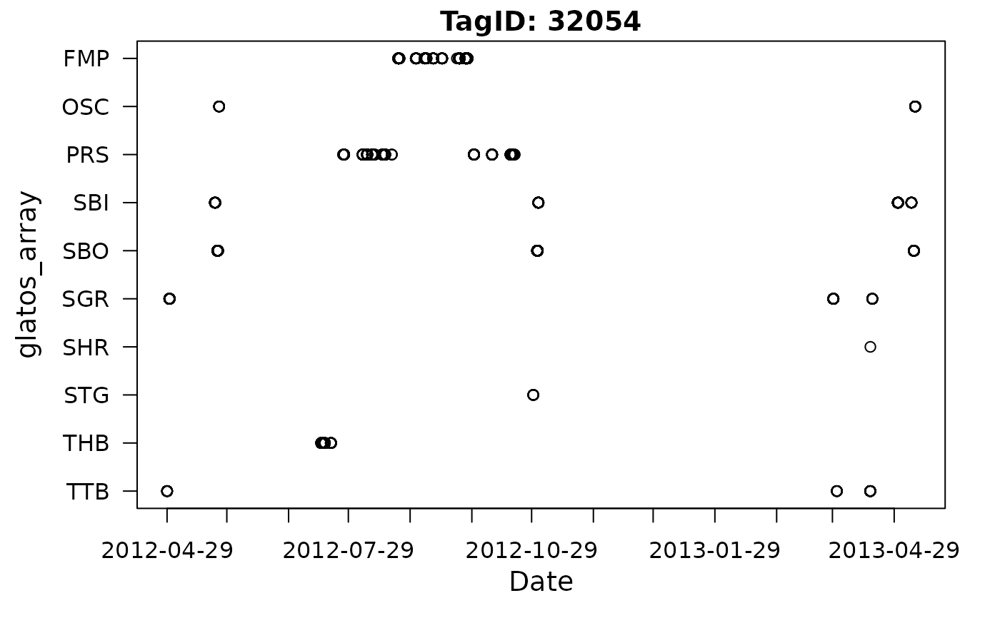
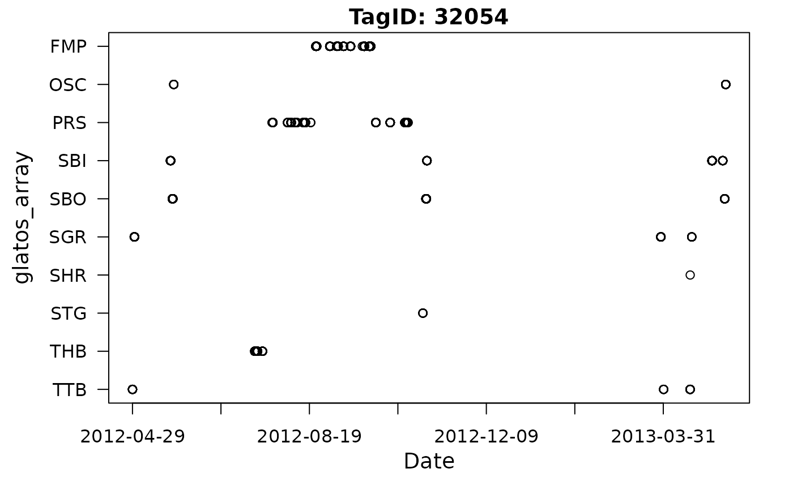
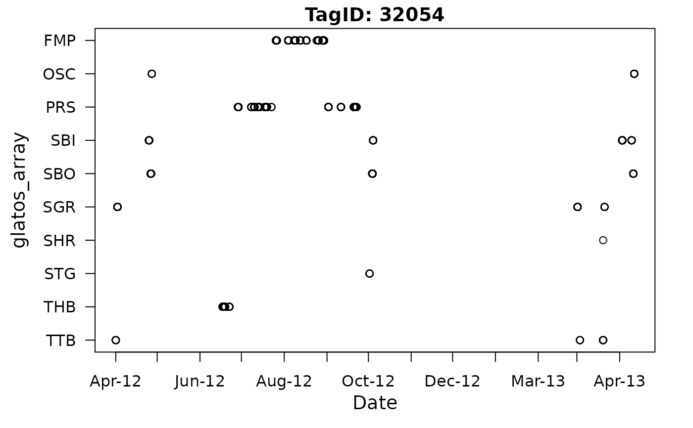
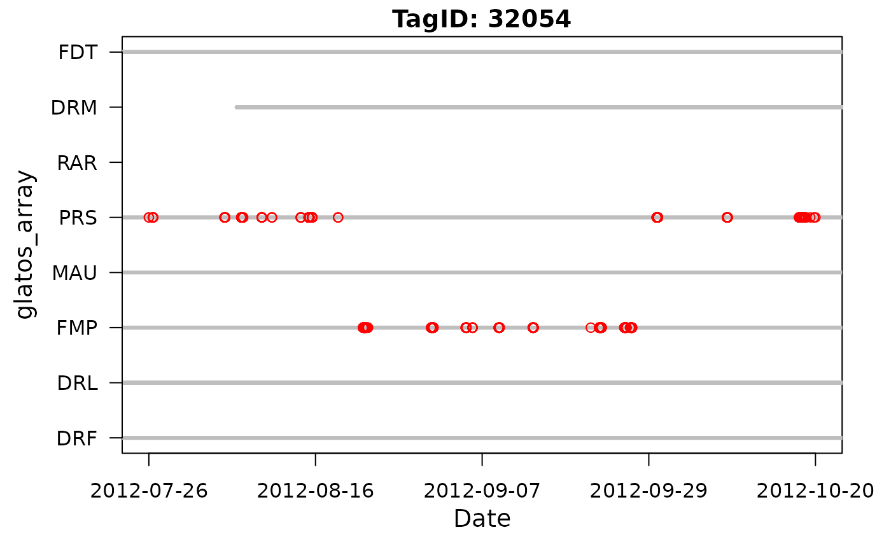

Plot detection locations of acoustic transmitters over time
Source:R/vis-abacus_plot.r
abacus_plot.RdPlot detection locations of acoustic transmitters over time.
Usage
abacus_plot(
det,
location_col = "glatos_array",
locations = NULL,
show_receiver_status = NULL,
receiver_history = NULL,
out_file = NULL,
x_res = 5,
x_format = "%Y-%m-%d",
outFile = NULL,
...
)Arguments
- det
A
glatos_detectionsobject (e.g., produced by read_glatos_detections) containing detections to be plotted.OR A data frame containing detection data with at least two columns, one of which must be named 'detection_timestamp_utc', described below, and another column containing a location grouping variable, whose name is specified by
location_col(see below).The following column must appear in
det:detection_timestamp_utcDetection timestamps; MUST be of class POSIXct.
- location_col
A character string indicating the column name in
detthat will be used as the location grouping variable (e.g. "glatos_array"), in quotes.- locations
An optional vector containing the locations
location_colto show in the plot. Plot order corresponds to order in the vector (from bottom up). Should correspond to values inlocation_col, but can contain values that are not in the det data frame (i.e., can use this option to plot locations fish were not detected).- show_receiver_status
DEPCRECATED. No longer used. A logical value indicating whether or not to display receiver status behind detection data (i.e., indicate when receivers were in the water). If
show_receiver_status== TRUE, then a receiver_history data frame (receiver_history) must be supplied. Default is FALSE.- receiver_history
An optional
glatos_receiversobject (e.g., produced by read_glatos_receivers) containing receiver history data for plotting receiver status behind the detection data whenreceiver_historyis notNULL.OR An optional data frame containing receiver history data for plotting receiver status behind the detection data.
The following column must be present:
deploy_date_timeReceiver deployment timestamps; MUST be of class POSIXct.
recover_date_timeReceiver recovery timestamps; MUST be of class POSIXct.
- a grouping column whose name is
specified by
location_col See above.
- out_file
An optional character string with the name (including extension) of output image file to be created. File extension will determine type of file written. For example,
"abacus_plot.png"will write a png file to the working directory. IfNULL(default) then the plot will be printed to the default plot device. Supported extensions: png, jpeg, bmp, and tiff.- x_res
Resolution of x-axis major tick marks. If numeric (e.g., 5 (default value), then range of x-axis will be divided into that number of equally-spaced bins; and will be passed to
length.outargument ofseq.Date. If character, then value will be passed tobyargument of seq.Date. In that case, a character string, containing one of "day", "week", "month", "quarter" or "year". This can optionally be preceded by a (positive or negative) integer and a space, or followed by "s". E.g., "10 days", "weeks", "4 weeks", etc. See seq.Date.- x_format
Format of the x-axis tick mark labels (major ticks only; minor ticks are not supported). Default is "%Y-%m-%d". Any valid strptime specification should work.
- outFile
Deprecated. Use
out_fileinstead.- ...
Other plotting arguments that pass to plot, points (e.g.,
col,lwd,type). Usecex.mainto set title character size, andcol.mainto set title color. Ifxlimis specified, it must be a two-element vector of POSIXct.
Details
NAs are not allowed in any of the two required columns.
The locations vector is used to control which locations will appear
in the plot and in what order they will appear. If no locations vector is
supplied, the function will plot only those locations that appear in the
det data frame and the order of locations on the y-axis will be
alphebetical from top to bottom.
By default, the function does not distinguish detections from different transmitters and will therefore plot all transmitters the same color. If more than one fish is desired in a single plot, a vector of colors must be passed to the function using the 'col =' argument. The color vector must be the same length as the number of rows in the detections data frame or the colors will be recycled.
Plotting options (i.e., line width and color) can be changed using optional graphical parameters http://www.statmethods.net/advgraphs/parameters.html that are passed to "points" (see ?points).
Examples
# get path to example detection file
det_file <- system.file("extdata", "walleye_detections.csv",
package = "glatos"
)
det <- read_glatos_detections(det_file)
# subset one transmitter
det2 <- det[det$animal_id == 153, ]
# plot without control table and main tile and change color to red
abacus_plot(det2,
locations = NULL,
main = "TagID: 32054", col = "red"
)

# example with locations specified
abacus_plot(det2, locations = c(
"DRF", "DRL", "FMP", "MAU", "PRS", "RAR",
"DRM", "FDT"
), main = "TagID: 32054", col = "red")

# plot with custom y-axis label and lines connecting symbols
abacus_plot(det2, main = "TagID: 32054", type = "o", pch = 20, col = "red")

# plot with custom x-axis resolution - 10 bins
abacus_plot(det2, main = "TagID: 32054", x_res = 10)

# plot with custom x-axis resolution - monthly bins
abacus_plot(det2, main = "TagID: 32054", x_res = "month")

# plot with custom x-axis resolution - 8-week bins
abacus_plot(det2, main = "TagID: 32054", x_res = "8 weeks")

# plot with custom x-axis format
abacus_plot(det2, main = "TagID: 32054", x_res = "months", x_format = "%b-%y")

# plot with custom x axis limits
xLim <- as.POSIXct(c("2012-01-01", "2014-01-01"), tz = "UTC")
abacus_plot(det2, main = "TagID: 32054", xlim = xLim)
#> Error in abacus_plot(det2, main = "TagID: 32054", xlim = xLim): object 'xLim' not found
# example with receiver locations
# get example receiver location data
rec_file <- system.file("extdata", "sample_receivers2.csv",
package = "glatos"
)
rec <- read_glatos_receivers(rec_file)
abacus_plot(det2,
locations = c(
"DRF", "DRL", "FMP", "MAU", "PRS", "RAR",
"DRM", "FDT"
), receiver_history = rec,
main = "TagID: 32054", col = "red"
)

# example with grey box plotted in background (using panel.first)
# set time range covered by rectangle
rect_x_rng <- as.POSIXct(c("2012-07-31", "2013-04-15"), tz = "UTC")
# get number of unique locations (y-axis)
n_locs <- length(unique(det2$glatos_array))
# plot as grey box in background
abacus_plot(det2,
locations = NULL,
main = "TagID: 32054", col = "red",
panel.first = rect(rect_x_rng[1], 1, rect_x_rng[2], n_locs,
col = "grey",
border = NA
)
)
 #> Error in abacus_plot(det2, locations = NULL, main = "TagID: 32054", col = "red", panel.first = rect(rect_x_rng[1], 1, rect_x_rng[2], n_locs, col = "grey", border = NA)): object 'rect_x_rng' not found
#> Error in abacus_plot(det2, locations = NULL, main = "TagID: 32054", col = "red", panel.first = rect(rect_x_rng[1], 1, rect_x_rng[2], n_locs, col = "grey", border = NA)): object 'rect_x_rng' not found